Oral Communication
The strategies I found to be successful in oral communication were those related to the audio-visual and non-verbal strategies. During my work on my Adora Svitak analysis, I created slides that each had one accent word, something to tie together the ideas such as “Making the Argument Seen” and “The Power of No Constraints” then I paired a direct quotation from her talk with a supporting image, such as the Kids Design Glass artwork and Anne Frank and Ruby Bridges photos. That meant that my evidence had to be visual and not auditory. This was confirmed with my delivery. I stood in an open, upright, forward-facing posture, while facing the audience, I used many open-handed gestures to emphasise key points, and I tried to make eye contact with the audience when explaining to them.
My big focus is on how much I rely on my full script. I had my phone with the script in it for the entire presentation, and in the longer segments I actually read from my phone! It brought my eyes down, and snapped the eye contact that I had going. A speaker at the top level needs to adjust their speech to the room and when I read from my cell phone, it killed off my gesturing and eye contact throughout the presentation.
My next step is to get the phone out of my hand. I would like to have a list of key points on the slides or on small cue cards, rather than a script. I’ll practice aloud until I do it without reading the material, and then I’ll record myself to see how I am doing with eye contact and pacing. I also have to do it earlier as well, because I was already a little late with the script, which was what made me stick with it in the first place.
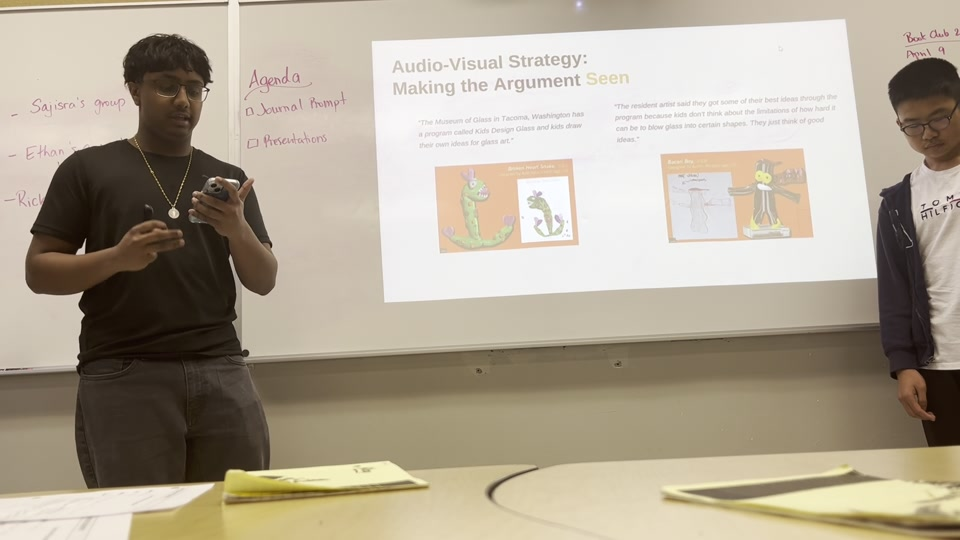
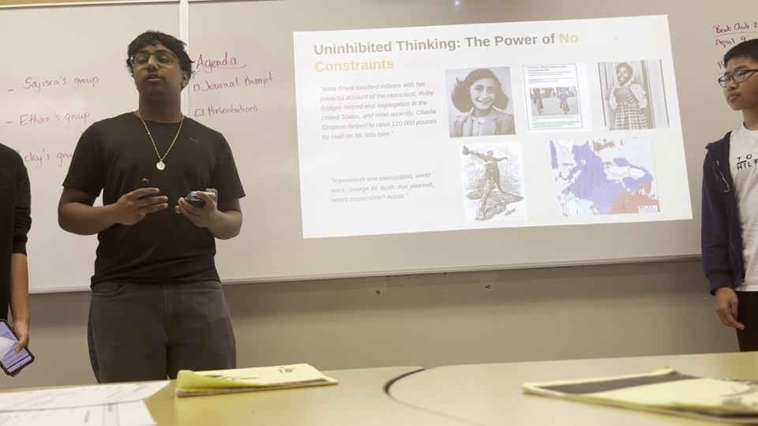
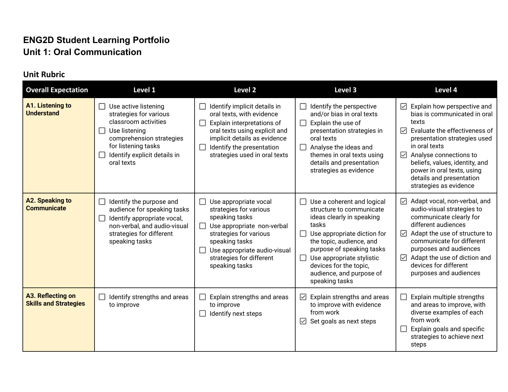
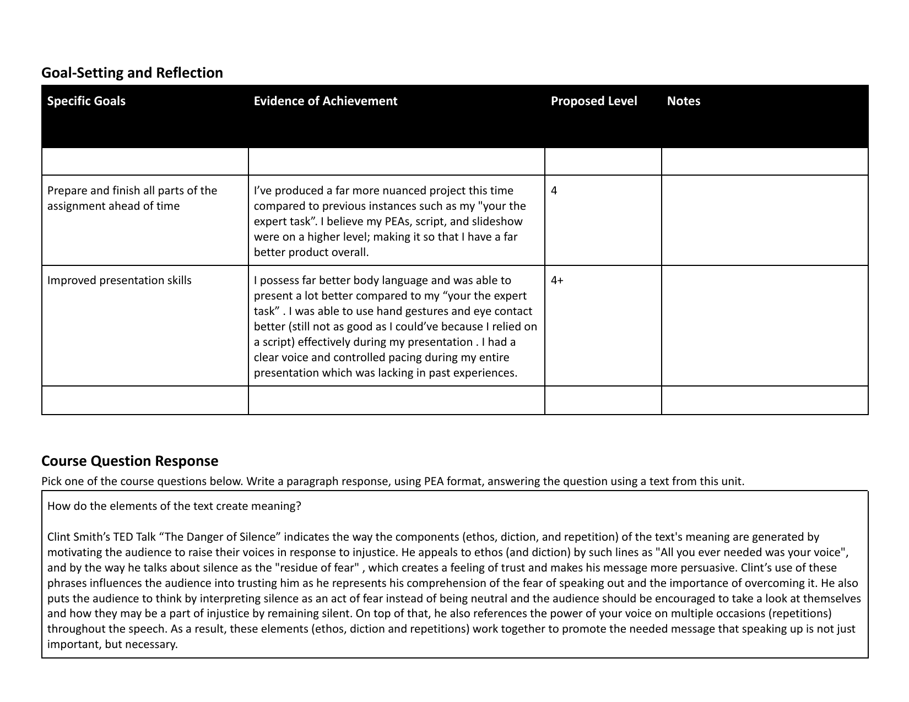
Reading & Literature Studies
My greatest asset for reading is the ability to take some comprehension strategies and apply them to the stylistic aspect of a text to construct a true interpretation of it. If you want a picture of the future, imagine a boot stamping on a human face, forever, was a line that I used in my book club work in 1984. I mentioned the symbolism of the foot as a symbol of oppression, the face as a symbol of people, the word forever, and how it made us see the Party didn’t want order; it wanted endless oppression. I did the same with the last line, “He loved Big Brother”, reading the irony, and the coldness and finality of the tone, in order to argue that Winston’s arc gets turned, and that the Party can rewrite a person’s identity. I also referred to the “2+2=5” moment and its relation to “real world propaganda.”
Things I need to work on are analysing features of the text along with stylistic elements rather than separately, and analysing form and features without support. In my rewritten “Fish Sticks” PEA I got to that level, but I needed Ms. R’s help to do it. I’m not in tune with tone and irony as it is part of the what I’m working on, but I want to be the norm for me.
My next step is to alter the way I’m annotating so that every annotation I make to a stylistic choice is accompanied by the text feature it goes through. I’m also going to have a quick checklist that I’m going to use before I say a paragraph is done to make sure it's cohesive in every way.
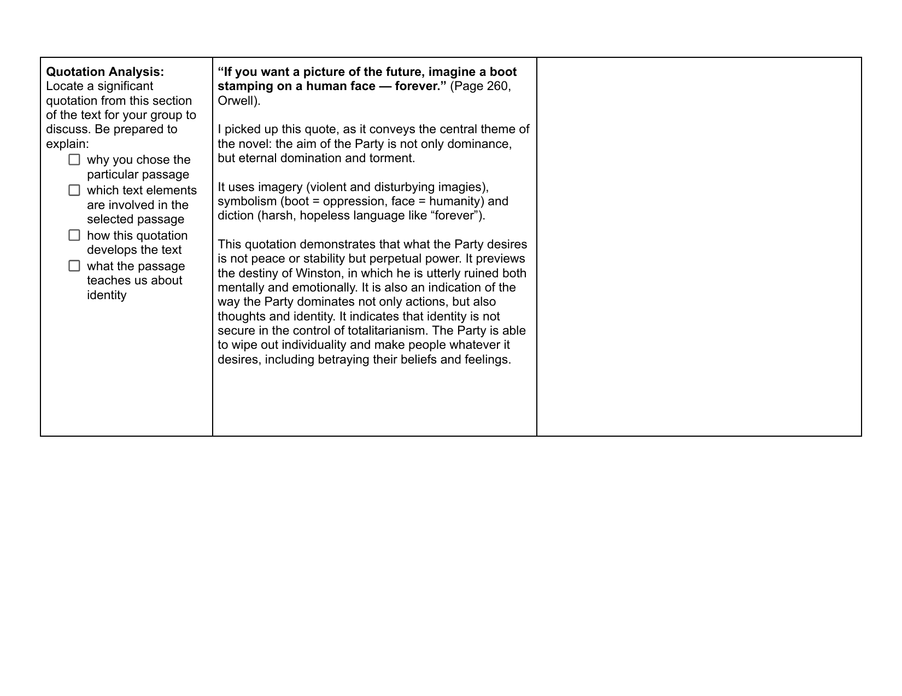
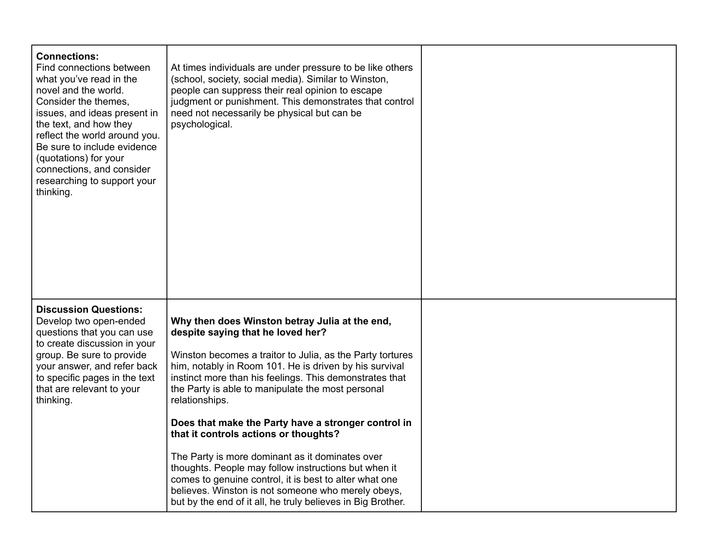
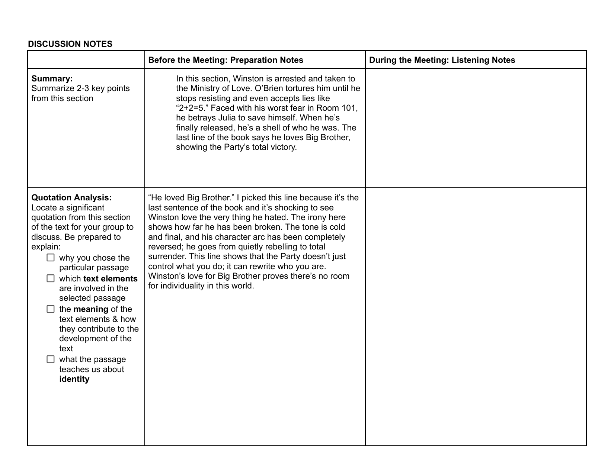
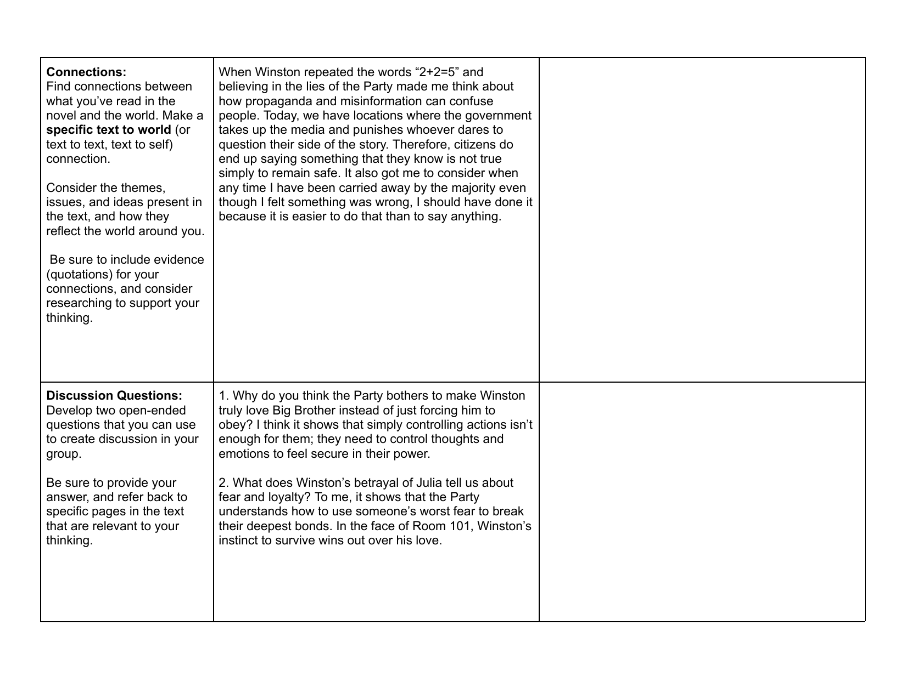
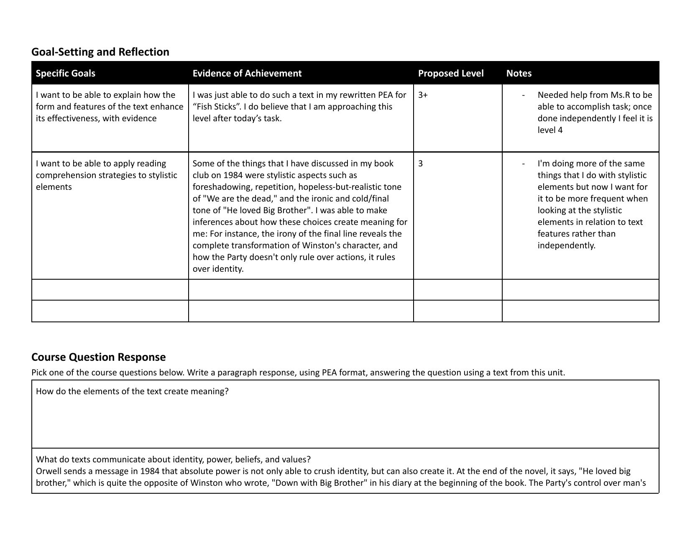
Writing
Form and Style: “Cinderella Murder Mystery” PEA
My assets here are to use form and style to construct a clear argument. In my Cinderella murder mystery PEA, I chose the themes of the Prince’s power over all others, his god complex and his motive to silence a “commoner”. I reinforced these themes with specific evidence such as gloves behind the fountain, turning the clock forward, snapping the wand and constantly dusting his sleeves.
I’m thinking in terms of content and style I still need to improve on here. Content, I give more supporting details than I need and ended up repeating myself. In the fairytale PEA, I stack a bunch of evidence one atop another, thus making the point more complicated than it needs to be rather than selecting the best one or two. With style, my formal register slips. I had brackets and side comments such as (crime scene) and (Cinderella’s magic is going to expire earlier) and even an exclamation mark on (dusting his sleeves) which were all not part of formal writing.
This is followed by a revision pass to focus. First, I’ve trimmed my supporting details to the two or three best for each point. Then I go through and remove the informal brackets, side comments, and exclamation marks, and rearrange that information into the sentence.
Reflecting on My Skills: Creative Writing, “The Spirit World”
My voice and my descriptive detail are my strengths in my creative writing. In “The Spirit World” I wrote psychologically flawed but searching first person, such as “I’m not the sharpest tool in the shed,” and spoke to make the world feel real, by using controlled imagery such as the “soft kind of black” sky filled with only white outlines, and the spirit family with their dotted eyes and triangle bodies. I maintained pace and dialogue was used to establish character.
My main problem is to think of ideas and plan them before I begin to write. It wasn’t planned, I wrote it down the road, and you can see it in the through line of the book. I’m stuck on the idea of solving my problems, putting myself first, and connection rather than saying one thing. I introduce a subplot about the forgotten brother of the family and then never resolve that and I introduce a rule that if you kill a spirit, you’ll disarm them, but that rule doesn’t really come into effect because I just tell them that I’ve already solved my problem by killing the king. Those are things you’re doing to plan, not sentence level planning problems. I know I can plan well because I did for my Clint Smith analysis in my 5.1 Modelled Analysis sheet where I went through the before, during, and after breakdown, brainstormed the critical questions and planned my PEA before writing any words at all. I just need to apply that same planning to my creative writing and all it’s related.
My next step is to brainstorm in a set order prior to drafting. The one message comes first, then I find a character who has this message, then only include events and symbols that support this message, and finally only include subplots and rules that tie up. To demonstrate I can do it, I went back and wrote the brainstorm I should have done for “The Spirit World”:
- Message: Putting yourself first is the only way you are going to get to the bottom of the issue that is gnawing on you, and it is only when you do, that you can carry the people, and the legacy you care about.
- Arc: He begins avoiding and uncertain, then he picks himself up, then he builds up the strength to go back.
- Symbols: the inner state of the spirit world, the problem that is taking him over, his family pressure, his lack of feeling good enough, the king with a body that cannot be beaten by force, the sword that was given by his old friend, connection made into strength, the portal that is hope and the opportunity to return changed.
- Subplot fix: The lost brother story is actually important to the plot of this one because knowing that the portal is bi-directional gives the family some hope and it’s also a reprieve for the hope he’s had himself.
- Rule payoff: I already have the king disarmed by removing his sword, so his final line should tie to that theme that you don’t overcome a problem like this by trying harder, you overcome it by changing your perspective.
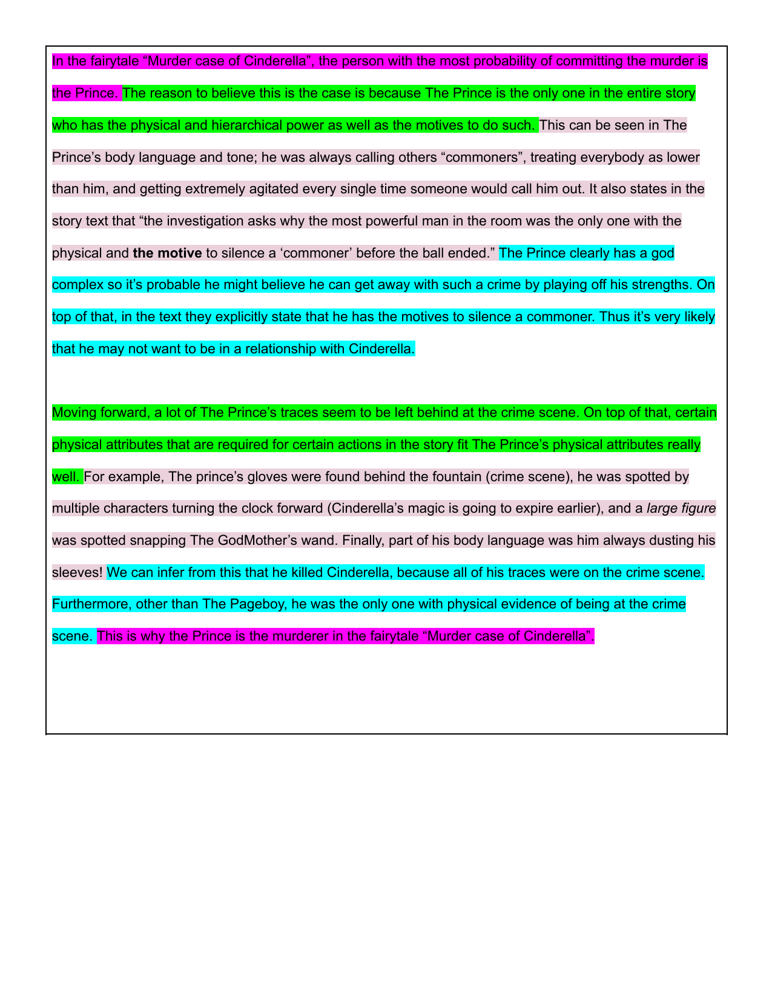
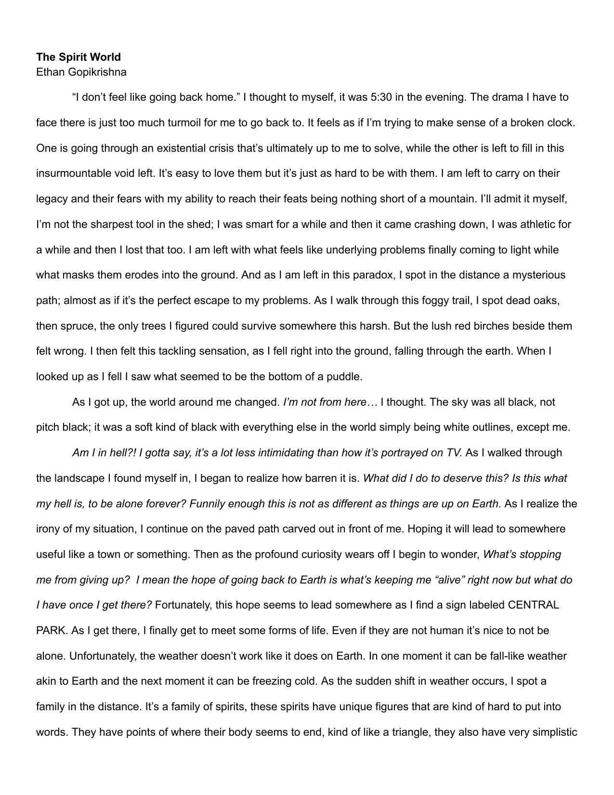
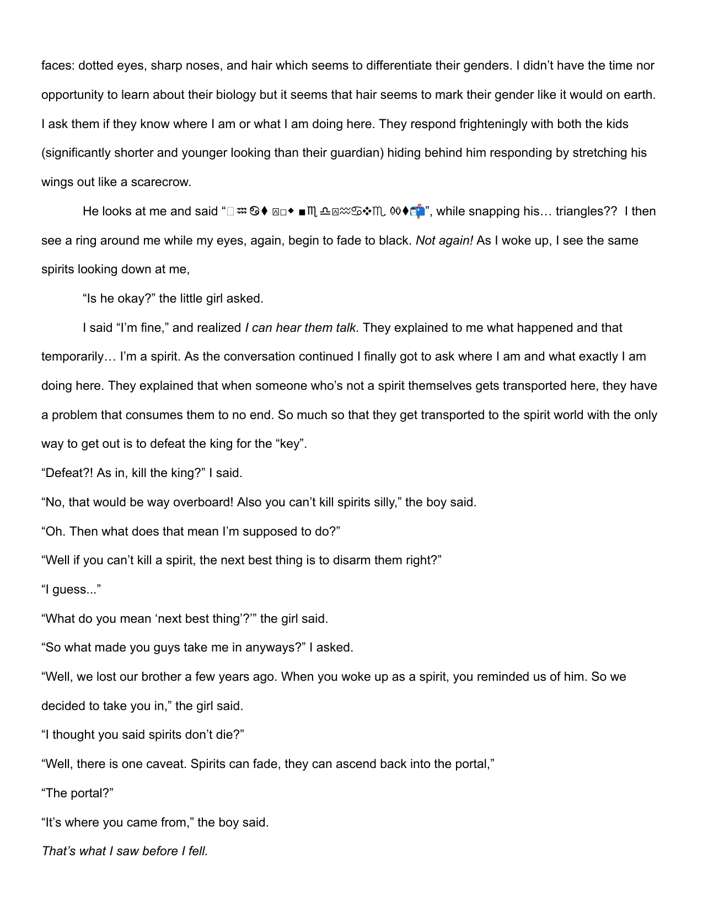
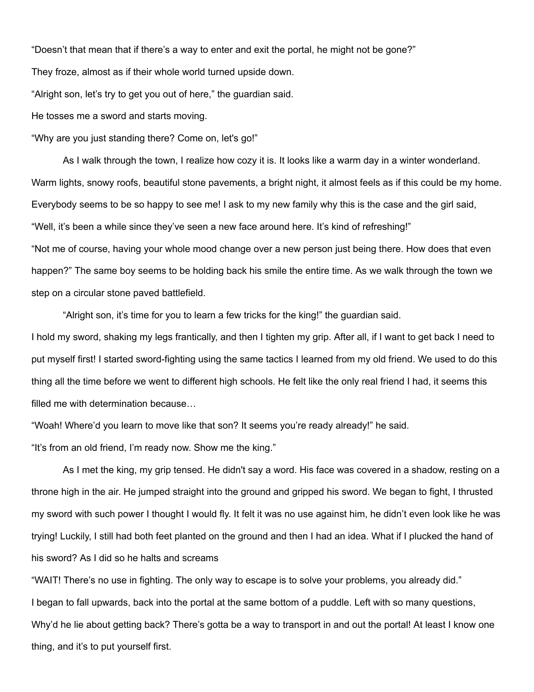
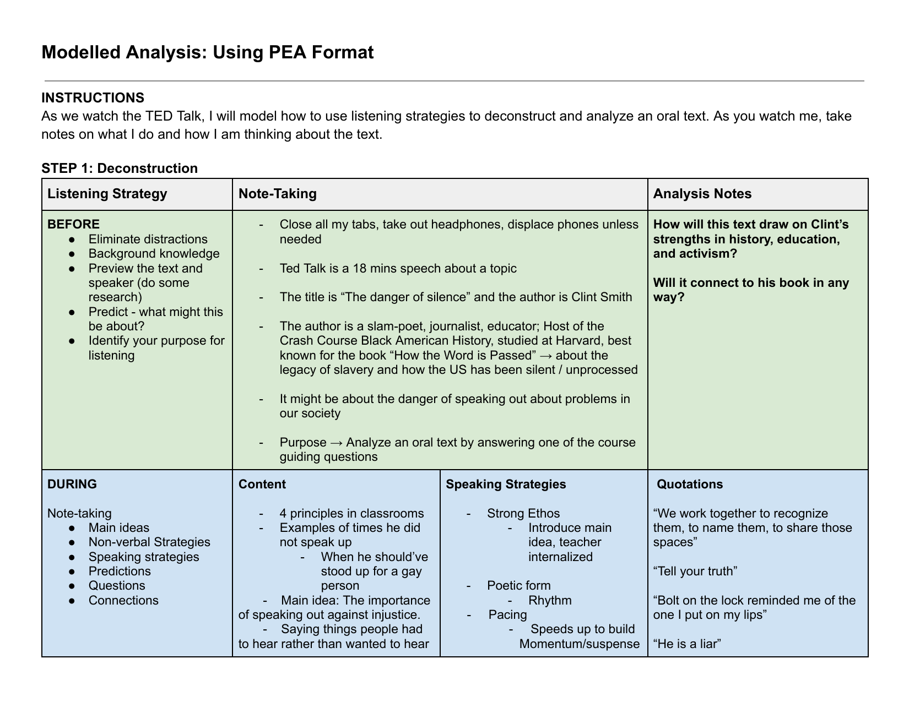
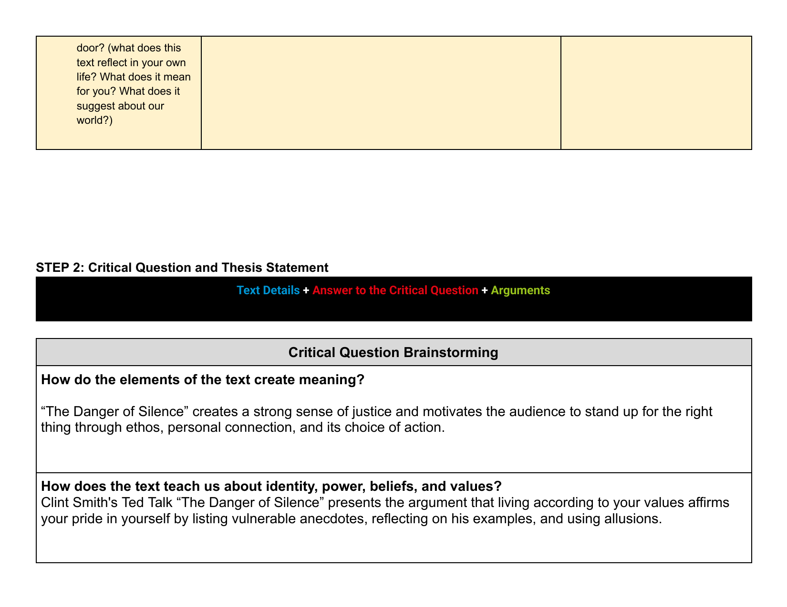
Media Studies: “I, Duckman”
So what I’m good at in media is carefully constructing an argument based on code. As I analysed the text of “I, Duckman”, I went over how the elements of the text create meaning and how the codes interact to make the elements indicate American dysfunction, demonstrating the “Quotable Duckman” prop and references to Citizen Kane’s Rosebud and A Clockwork Orange, and the fact that a moral still prevails even if the comforting sitcom reset never comes. Avoiding a perfect plot and even altering my understanding of what an easy “trojan horse” angle is, when it arrived for the worldview of the show.
I think the most challenging aspect of my thesis was to have a theme that I could stick to. I started with two different premises: the comedy theme, and the inversion of the sitcom form; and a general one that the programme shows “dysfunction” without ever defining it. It was only when I identified the specific idea and had both arguments support the idea that it came together. My thesis was that in Duckman, Everett Peck mocks American life in order to expose how an obsessive need for recognition replaces authentic human connection, he uses humor in his diction and takes apart some of the rules of the TV sitcom to make that point. So here are two arguments: my first is the desire for recognition and my second is the cost of recognition.
Before I begin drafting, I first give the abstract idea in concrete terms and then check each of my body paragraphs to see if it’s supporting that one idea. If a paragraph is attempting to make an argument other than the thesis, it is not coherent at this moment.
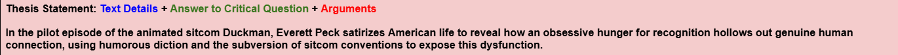